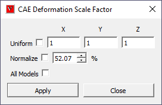
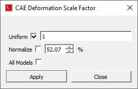

Deformation Scale Factor¶
This command helps user to scale CAE deformation of the model so that the deformation is visible and understandable by user. User is unable to find existence of deformation, while deformation value of a node ID is,
Very large compared to other nodes, so that user could not identify what collapsed the model
Very small, so that user could not identify much difference in the deformation of model.
This option helps to understand both cases
Scale Factor Panel

Uniform |
By checking this option, user modified value will be applied to all X, Y and Z direction. |
X, Y Z |
Scale factor for each direction. Default scale factor for all three directions is 1. |
Normalize |
Allows user to scale up/down with respect to model bounding percentage. By default, deformation is scaled to 10% of model bounding radius. User can check this option to scale in percent and actual scale factor is accordingly updated. |
All Models |
Applies scale factor to all mereged models. |
Apply |
The modified scale factors will applied on model and visible in viewer. |
Deformation is normalized (uniform -max - normalization) and mapped with model bounding box size. By default normalized deformation is scaled to 10 percent of bounding sphere radius. To apply “True scale” uncheck Normalize option and set scale factor in ‘Uniform’ option as 1. Uniform means, constant scaling in X, Y and Z direction. if ‘Uniform’ option is unchecked, the dialog shows its X, Y and Z factors as below. Here scaling will vary in each direction.
Note: Any change in scale factor is applicable for current model, if more than one model exists.
How to scale the model uniformly?
Click ‘Deformation Scale Factor’ icon in CAE toolbar, which pops up ‘CAE Deformation Scale Factor’ dialog.
Click ‘Uniform’ option, which provides modified dialog as below.

Provide a different scale value, say 2 in the edit box.
Click ‘Apply’ and observe the scaled deformation in the viewer.
How to scale the model in each axis?
Click ‘Deformation Scale Factor’ icon from the CAE toolbar, which pops up Deformation Scale Factor dialog.
Provide different scale values for each axis in the corresponding edit boxes.
Click ‘Apply’ and observe the scaled deformation in the viewer as below.
How to scale deformation for Mode case animation data?
Load a mode case CAX file.
Select Animate.
Select Deformation Scale Factor
‘Normalize’ option is visible and checked by default for mode case data.
The default value for mode case data is 10 % and for complex eigen data is 1 %,
Change the value to 20 % and click apply.
Notice the change.
Uncheck ‘Normalize’ option.
Usual scale factor option will be enabled. Enter 1 and click apply for true scale.